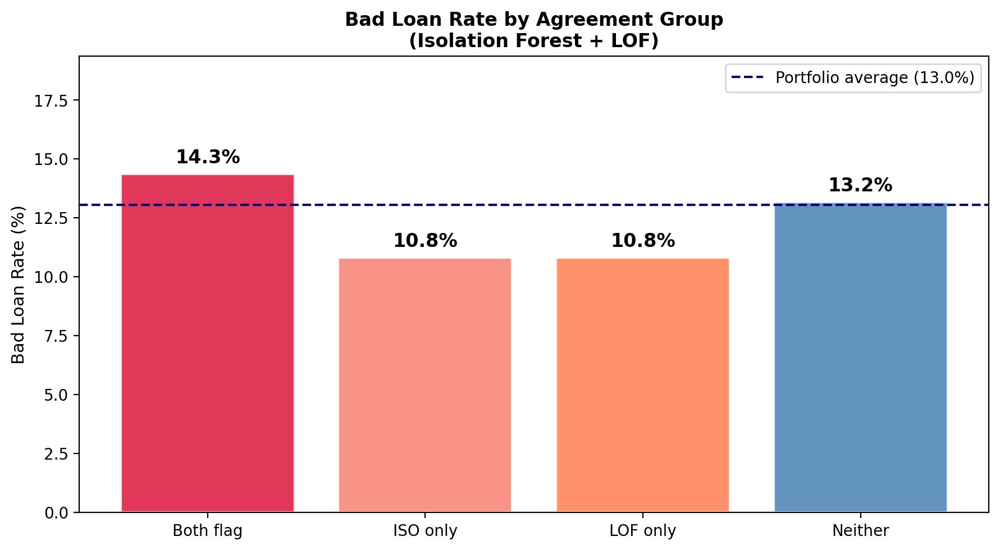
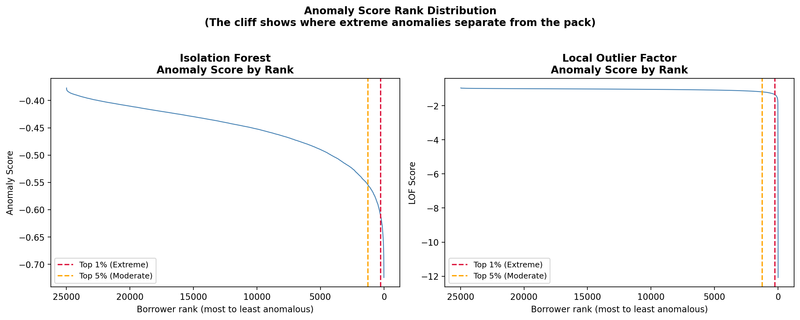
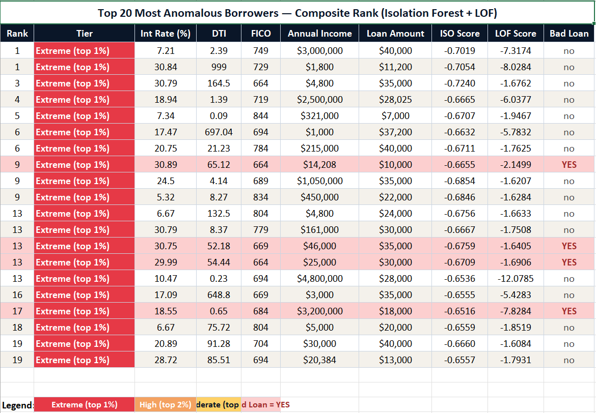
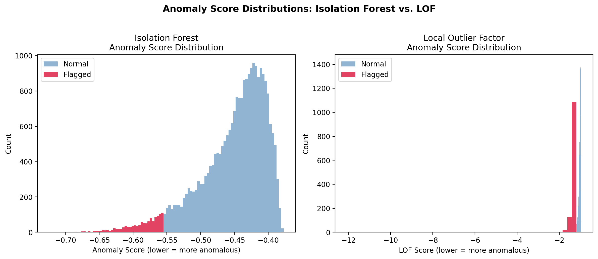
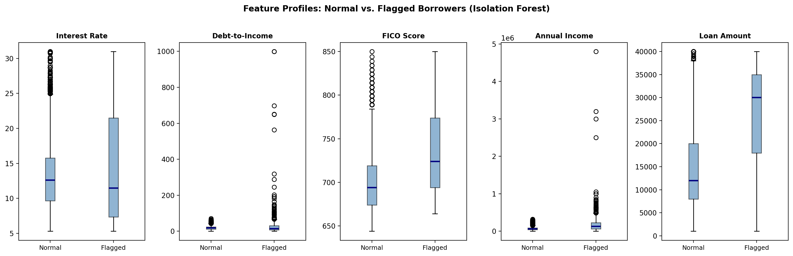
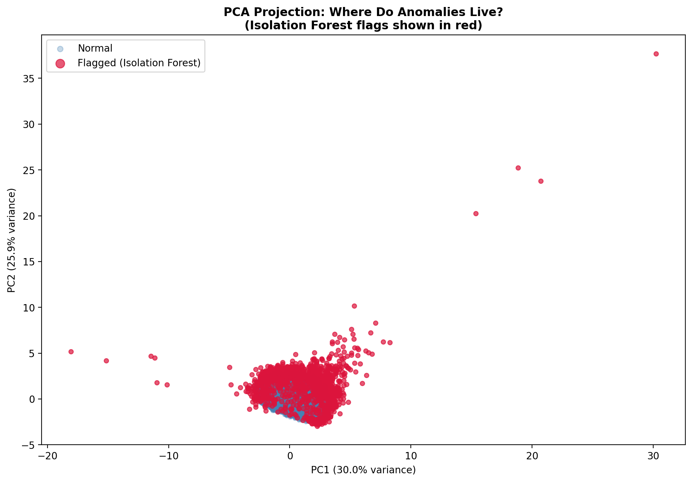

Three unsupervised anomaly detection methods applied to 24,977 LendingClub loans — with no knowledge of who actually defaulted. Includes ranking, tiering, and a critical distinction most tutorials miss.
In a mature fraud program, you have years of confirmed cases. You know what fraud looks like. You can train a supervised model, tune it, validate it, and deploy it with confidence.
But every fraud program started somewhere. Every new risk type begins without labels. And even in mature programs, novel fraud patterns look nothing like your training data.
Supervised models are excellent at finding more of what they have already seen. They are blind to what they have never encountered.
Unsupervised anomaly detection asks a different question. Not "does this borrower look like past fraudsters?" but "does this borrower look like everyone else?" A borrower who does not fit the pattern is worth a second look — regardless of whether anyone has ever labeled them risky before.
Finds borrowers that are easy to isolate globally — unusual across the entire portfolio.
Finds borrowers unusual relative to their local neighbors — catches anomalies hidden within subgroups.
Learns a boundary around normal borrowers and flags anything outside it.
bad_loan variable — a pre-existing indicator from LendingClub's own servicing records showing whether a loan ultimately defaulted or was charged off. This variable was set completely aside before any modeling. The models had no knowledge of who defaulted. We only looked at bad_loan after the models ran, as a retrospective check to understand what they had found. In a real deployment on a new portfolio or new fraud pattern, you would not have this luxury.
import warnings
warnings.filterwarnings('ignore')
import pandas as pd
import numpy as np
import matplotlib.pyplot as plt
from sklearn.ensemble import IsolationForest
from sklearn.neighbors import LocalOutlierFactor
from sklearn.svm import OneClassSVM
from sklearn.preprocessing import StandardScaler
from sklearn.decomposition import PCA
from openpyxl import Workbook
from openpyxl.styles import Font, PatternFill, Alignment, Border, Side
from openpyxl.utils import get_column_letter
# Install if needed:
# pip install scikit-learn pandas numpy matplotlib openpyxlWe use five borrower features from the 25,000-loan LendingClub sample. Feature scaling is critical for LOF and One-Class SVM — both are distance-based methods that are sensitive to the scale of each variable.
DATA_PATH = "lendingclub_sample_25000.csv"
OUTPUT_DIR = "."
df = pd.read_csv(DATA_PATH, low_memory=False)
FEATURES = ['int_rate', 'dti', 'fico_range_high', 'annual_inc', 'loan_amnt']
TARGET = 'bad_loan'
df = df[FEATURES + [TARGET]].dropna()
df[TARGET] = pd.to_numeric(df[TARGET], errors='coerce')
df = df.dropna()
df[TARGET] = df[TARGET].astype(int)
print(f"Dataset: {len(df):,} loans")
print(f"Bad loan rate (set aside): {df[TARGET].mean():.1%}")
# Features only — no target
X = df[FEATURES].copy()
# Scale features — essential for LOF and One-Class SVM
scaler = StandardScaler()
X_scaled = scaler.fit_transform(X)Isolation Forest builds random decision trees and measures how quickly each borrower can be isolated from the rest. Normal borrowers — who resemble many others — require many splits to isolate. Anomalous borrowers can be separated in just a few splits.
Think of it as asking: how easy is it to single this borrower out from the crowd? The easier it is, the more anomalous they are.
iso = IsolationForest(
n_estimators=300,
contamination=0.05, # flag top 5% as anomalies
random_state=42,
n_jobs=-1
)
iso.fit(X_scaled)
df['iso_score'] = iso.score_samples(X_scaled) # lower = more anomalous
df['iso_flag'] = (iso.predict(X_scaled) == -1).astype(int)
n_iso = df['iso_flag'].sum()
print(f"Borrowers flagged: {n_iso:,} ({n_iso/len(df):.1%})")
print(f"Bad loan rate — flagged: {df[df['iso_flag']==1][TARGET].mean():.1%}")
print(f"Bad loan rate — not flagged:{df[df['iso_flag']==0][TARGET].mean():.1%}")
print(f"\nProfile of flagged borrowers (mean values):")
print(df[df['iso_flag']==1][FEATURES].mean().round(2))LOF asks whether a borrower is unusual relative to their neighbors, not globally. A borrower is flagged if their local neighborhood is much denser than they are — meaning everyone around them is tightly clustered, but they stand apart.
A 22% interest rate in a subprime segment might be normal. That same rate in a prime borrower cluster is a red flag. LOF catches the second type — anomalies that hide within subgroups.
lof = LocalOutlierFactor(
n_neighbors=20,
contamination=0.05,
novelty=False,
n_jobs=-1
)
lof_preds = lof.fit_predict(X_scaled)
df['lof_score'] = lof.negative_outlier_factor_ # lower = more anomalous
df['lof_flag'] = (lof_preds == -1).astype(int)
n_lof = df['lof_flag'].sum()
print(f"Borrowers flagged: {n_lof:,} ({n_lof/len(df):.1%})")
print(f"Bad loan rate — flagged: {df[df['lof_flag']==1][TARGET].mean():.1%}")
print(f"Bad loan rate — not flagged:{df[df['lof_flag']==0][TARGET].mean():.1%}")
print(f"\nProfile of flagged borrowers (mean values):")
print(df[df['lof_flag']==1][FEATURES].mean().round(2))One-Class SVM learns a boundary around the core of the normal population. Anything outside that boundary is flagged as an anomaly. It is particularly good at capturing the shape of the normal distribution rather than just individual extreme values.
One-Class SVM is computationally intensive — on 25,000 borrowers it can be very slow. We run it on a 5,000-borrower sample.
# Sample for speed — One-Class SVM is slow on large datasets
sample_idx = np.random.RandomState(42).choice(len(X_scaled), 5000, replace=False)
X_sample = X_scaled[sample_idx]
df_sample = df.iloc[sample_idx].copy()
ocsvm = OneClassSVM(kernel='rbf', nu=0.05, gamma='scale')
ocsvm.fit(X_sample)
df_sample['ocsvm_score'] = ocsvm.score_samples(X_sample)
df_sample['ocsvm_flag'] = (ocsvm.predict(X_sample) == -1).astype(int)
n_ocsvm = df_sample['ocsvm_flag'].sum()
print(f"Borrowers flagged (5k sample): {n_ocsvm:,} ({n_ocsvm/len(df_sample):.1%})")
print(f"Bad loan rate — flagged: {df_sample[df_sample['ocsvm_flag']==1][TARGET].mean():.1%}")
print(f"Bad loan rate — not flagged:{df_sample[df_sample['ocsvm_flag']==0][TARGET].mean():.1%}")Running multiple methods raises an important question: which flagged borrowers should you actually act on? The answer is clear when you look at agreement across methods.
df['n_flags'] = df['iso_flag'] + df['lof_flag']
agree_both = df[df['n_flags'] == 2]
agree_one = df[df['n_flags'] == 1]
agree_none = df[df['n_flags'] == 0]
print(f"Flagged by BOTH: {len(agree_both):,} ({len(agree_both)/len(df):.1%}) "
f"— bad loan rate: {agree_both[TARGET].mean():.1%}")
print(f"Flagged by ONE: {len(agree_one):,} ({len(agree_one)/len(df):.1%}) "
f"— bad loan rate: {agree_one[TARGET].mean():.1%}")
print(f"Flagged by NEITHER: {len(agree_none):,} ({len(agree_none)/len(df):.1%}) "
f"— bad loan rate: {agree_none[TARGET].mean():.1%}")
Key insight: Borrowers flagged by only one method have a bad loan rate below the portfolio average. Those flagged by both methods exceed it. When two independent methods using fundamentally different logic both flag the same borrower, that convergence is a signal worth investigating.
Binary flags — flagged or not — miss an important dimension. Not all anomalies are equally anomalous. Each method produces a continuous score. We convert those scores to percentile ranks and average across methods to produce a composite anomaly score for every borrower.
n = len(df)
# Rank each method — rank 1 = most anomalous
df['iso_rank'] = df['iso_score'].rank(ascending=True)
df['lof_rank'] = df['lof_score'].rank(ascending=True)
# Convert to percentile (0 = most anomalous)
df['iso_pct'] = (df['iso_rank'] / n * 100).round(2)
df['lof_pct'] = (df['lof_rank'] / n * 100).round(2)
# Composite: average percentile across both methods
df['composite_pct'] = ((df['iso_pct'] + df['lof_pct']) / 2).round(2)
df['composite_rank'] = df['composite_pct'].rank(ascending=True).astype(int)
# Assign anomaly tiers
def assign_tier(pct):
if pct <= 1.0: return 'Extreme (top 1%)'
elif pct <= 2.0: return 'High (top 2%)'
elif pct <= 5.0: return 'Moderate (top 5%)'
elif pct <= 10.0:return 'Borderline (top 10%)'
else: return 'Normal'
df['anomaly_tier'] = df['composite_pct'].apply(assign_tier)| Tier | Approx. Count | Description | Recommended Action |
|---|---|---|---|
| Extreme (top 1%) | ~250 | Furthest from portfolio center, flagged by both methods | Immediate manual review |
| High (top 2%) | ~250 | Clearly anomalous, strong signal | Priority review queue |
| Moderate (top 5%) | ~750 | Meaningfully unusual, may include benign outliers | Enhanced monitoring |
| Borderline (top 10%) | ~1,250 | Somewhat unusual, lower priority | Watch list |
| Normal | ~22,500 | Fits typical portfolio pattern | Standard processing |

Reading this chart: The x-axis goes from most anomalous (left) to most normal (right). The cliff near the right side is where extreme anomalies separate from the pack. For LOF (right panel) the cliff is dramatic — some borrowers score below -12, while the vast majority cluster near -1. A borrower on the steep part of the cliff is categorically more anomalous than one on the flat part, even if they are only a few ranks apart.
The script exports a formatted Excel file showing the 20 most anomalous borrowers by composite rank — color coded by tier and outcome.
# Export ranked CSV — all borrowers
output_cols = ['composite_rank', 'anomaly_tier', 'composite_pct',
'iso_score', 'iso_rank', 'lof_score', 'lof_rank',
'int_rate', 'dti', 'fico_range_high',
'annual_inc', 'loan_amnt', TARGET]
df[output_cols].sort_values('composite_rank').to_csv(
f"{OUTPUT_DIR}/anomaly_ranked_borrowers.csv", index=False)
# Export formatted Top 20 Excel
# (see full script for complete openpyxl formatting code)
top20 = df.nsmallest(20, 'composite_pct')
# Color coding:
# Extreme tier cells — red background
# Bad Loan = YES rows — light red background
# Alternating rows — cream / white
Reading this table: Every row is an Extreme tier borrower (top 1%). Red rows indicate bad_loan = YES. Only 4 of the top 20 actually defaulted — illustrating that anomalous does not mean risky. The diversity of profiles in this table is the key teaching point.
This is the most important conceptual point in the entire tutorial.
A supervised model is trained on labeled outcomes. It learns what defaulters look like. When it flags a borrower, it is saying: "this borrower resembles past defaulters."
An unsupervised model has never seen a label. It only knows what a typical borrower looks like. When it flags someone, it is saying something entirely different: "this borrower does not look like most borrowers."
Those are fundamentally different statements.
Look at the top two cases in the table above:
Income $3,000,000 · DTI 2.39 · Rate 7.21% · FICO 749 · Bad loan: no. An ultra-wealthy borrower taking a modest loan at a prime rate. Statistically unusual, not risky.
Income $1,800 · DTI 999 · Rate 30.84% · FICO 729 · Bad loan: no. A DTI of 999 is not a real ratio. This record needs data investigation before any credit decision.
Income $14,208 · DTI 65.12 · Rate 30.89% · FICO 664 · Bad loan: YES. Every feature signals distress. The model was right to flag this one.
Every flagged borrower falls into one of these three categories:
Genuinely risky — the profile reflects real credit risk. Extreme DTI, very low income relative to loan amount, a rate that signals the lender already priced in significant risk.
Benign outlier — statistically unusual but not actually risky. Very high income, exceptionally low debt, a prime rate borrower in a subprime-heavy portfolio. Flagged because they stand out, not because they are dangerous.
Data quality issue — anomalous because something is wrong with the data. These cases need investigation before any credit decision — the issue is in the data pipeline, not the borrower.

Reading this chart: Blue = normal borrowers, red = flagged. Isolation Forest (left) shows a smooth distribution — flagged borrowers form a continuous tail. LOF (right) shows a more extreme separation, with some borrowers scoring far below the normal cluster.

Reading this chart: Each panel shows a feature's distribution for normal (left) vs flagged (right) borrowers. Flagged borrowers show dramatically wider spread on DTI and Annual Income — one borrower reaches a DTI near 1,000 and another an income near $5 million. The methods are partly detecting data quality extremes, not just credit risk.

Reading this chart: Normal borrowers (blue) form a dense cluster near the origin. Flagged borrowers (red) scatter in multiple directions — some pushed far right, some far left, some pushed high. There is no single type of anomaly. Anomalies come in many shapes.
Browse all tutorials at james-mott.jimmott52.workers.dev/#tutorials